專案背景
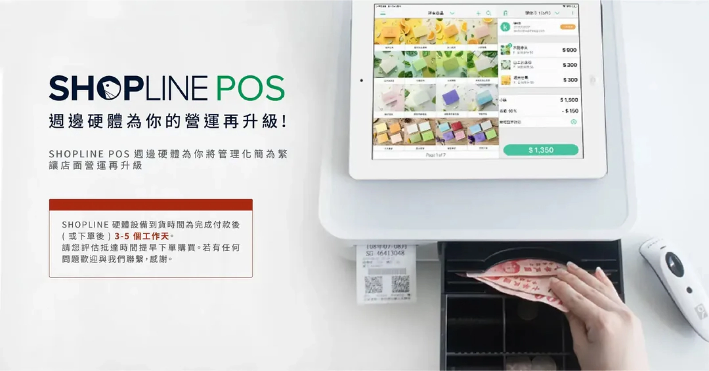
SHOPLINE 是一個整合線上線下銷售的電商平台，提供 POS 系統幫助店家管理實體店面的支付流程。
在本專案進行時，SHOPLINE 的 POS 系統在台灣尚未串接自有金流，店家需自行與銀行簽約；香港市場雖完成金流串接，但需支援多品牌刷卡機，且手續費高於市場平均。
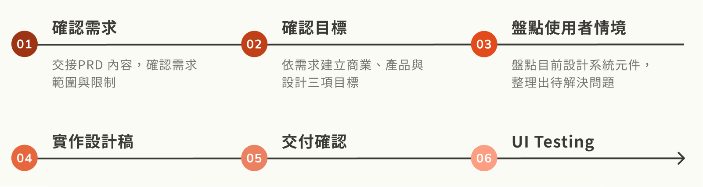
問題定義
缺乏金流功能、定價過高導致自家電商方案無競爭力
無金流服務，降低產品競爭力
台灣市場中尚未串接刷卡機服務，導致使用 SHOPLINE 服務的店家需另行處理信用卡結帳項目，降低結帳效率。
售價高於平均，業務難以推廣
香港市場中現有刷卡機支付成本高於市面平均價格，導致 POS 系統業務推廣與導入困難。

我針對 PRD 交付文件中對於商業現況的描述，定義本次專案在產品面與設計面的目標，以聚焦設計解方。
目標拆解
商業目標：提高手續費收益
增加使用 SHOPLINE Payment 的訂單以提升刷卡手續費收入。
產品目標：提供完整金流服務
提供完整（結帳、取消、退款、退貨）的 SHOPLINE Payment 金流服務，以支援店家提供消費者信用卡結帳的選項。
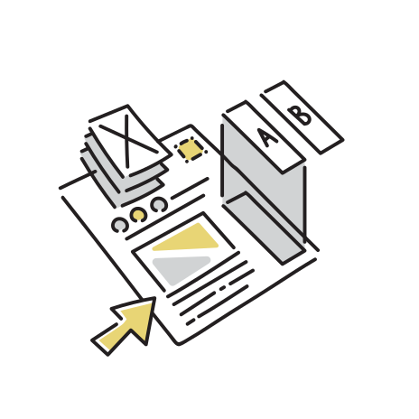
設計目標：提供完整金流服務
讓店家能快速完成金流結帳流程，並有效協助排除錯誤狀態以避免顧客長時間的等待。
針對 POS 系統現有機制，盤點各狀態的判斷時機、回應時間與各金流 / 非金流的判斷差異。
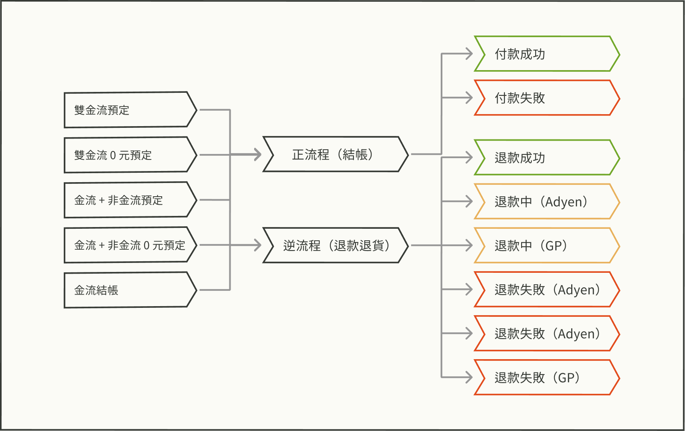
雖然 PRD 已經提供明確的設計解方，但我重新釐清問題後提出更能對應到目標的解方，並獲得採納。
Solution 1
明確提醒商家尚未進行刷卡機結帳
進行刷卡後，刷卡機並不會立即將款項撥入店家的帳戶中，需手動清機才能收到金流。因此在增加刷卡機結帳功能後，我們需要明確提醒商家尚未進行刷卡機結帳。
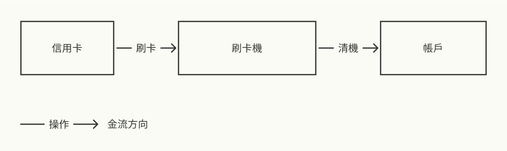
原解方
原先預期商家會使用 POS 中的「小結」頁面清點帳務後，一同進行清機。因此原需求希望在「小結」頁籤中提示清機操作，但我發現這不符合用戶操作習慣，因此進行了修改。
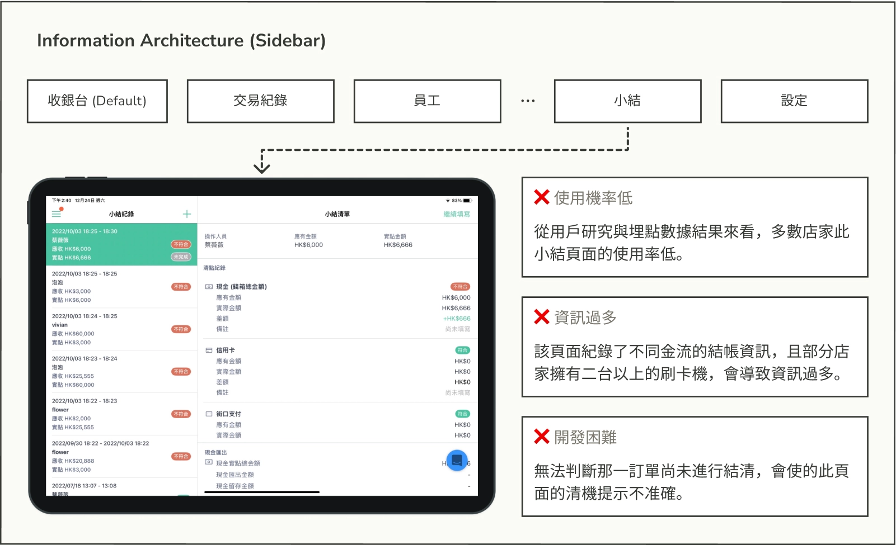
我的修正版本
設計聚焦：在不增加資訊負擔的前提下，可以即時提醒店家有重要操作尚未完成。
作為店家收款的重要功能，我設計了一個獨立的「清機」頁籤，並使用紅點提示未完成的清機操作。進入頁面後，店家可快速查看每台刷卡機的狀態，並逐台完成清機。
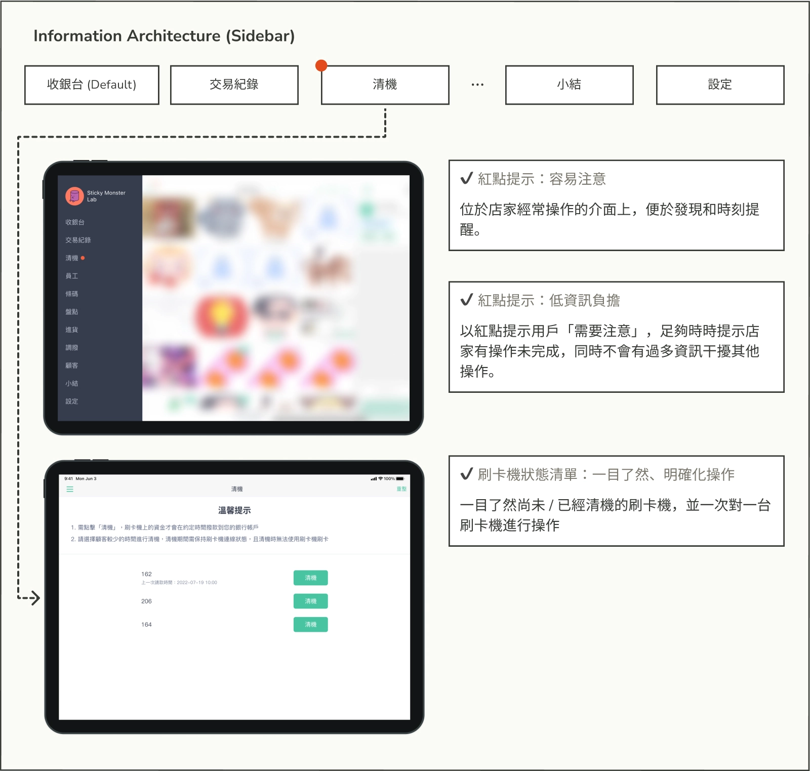
Solution 2
即時提示店家退款限制，減少錯誤操作
退款流程中，不同結帳方式與刷卡機機種有不同的退款限制（如僅能全額退或部分退）。若無清楚提示適用的退款方案，可能導致店家進行無謂的嘗試。因此，系統需在保留輸入靈活性的同時，防止錯誤操作，確保退款過程中的良好體驗。
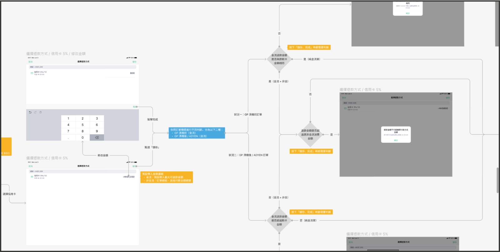
原解方
為了保留輸入金額的彈性，原需求設計為在輸入後才顯示錯誤提示。但在某些退款情況下，店家只能選擇一種退款額度（如全額退款），這樣的設計會導致不必要的操作，增加時間成本。
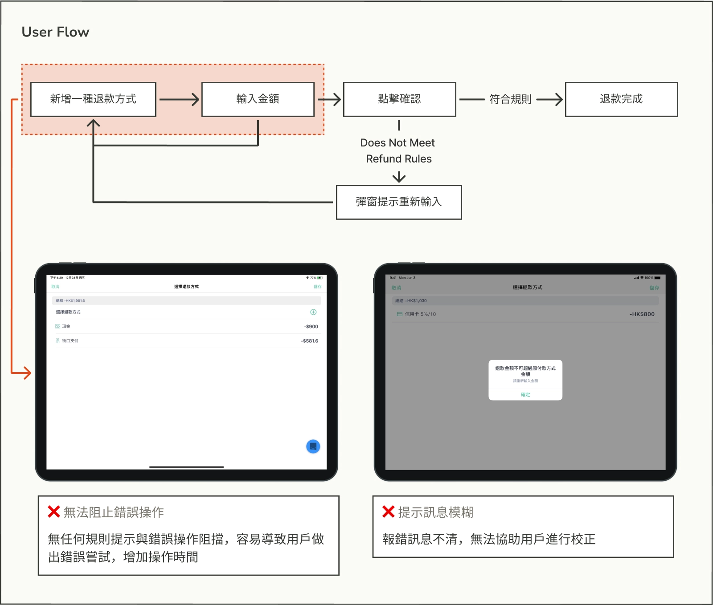
我的修正版本
設計聚焦：在不影響店家操作效率的情況下，提醒並制止店家進行錯誤的退款金額輸入
我在「選擇退款方式」和「退款方式列表」中添加可退款金額提示，並在報錯時再次顯示可輸入的金額，幫助店家完成退款流程。
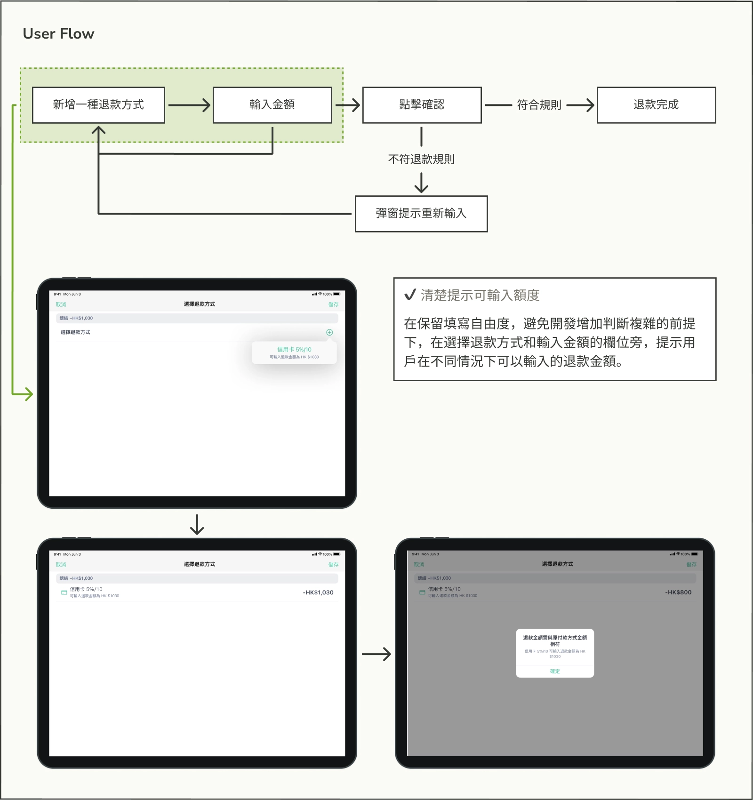
學習點
回到使用者情境思考解決方案的合理性
當接收到很精確的需求時，作為設計師依然該從商業、產品與設計三項目標盤點起，即便是在 B2B 功能導向的產品中，也要確保解方符合用戶情境與良好的體驗，避免產品本身因功能的堆疊，而逐漸失去易用性。
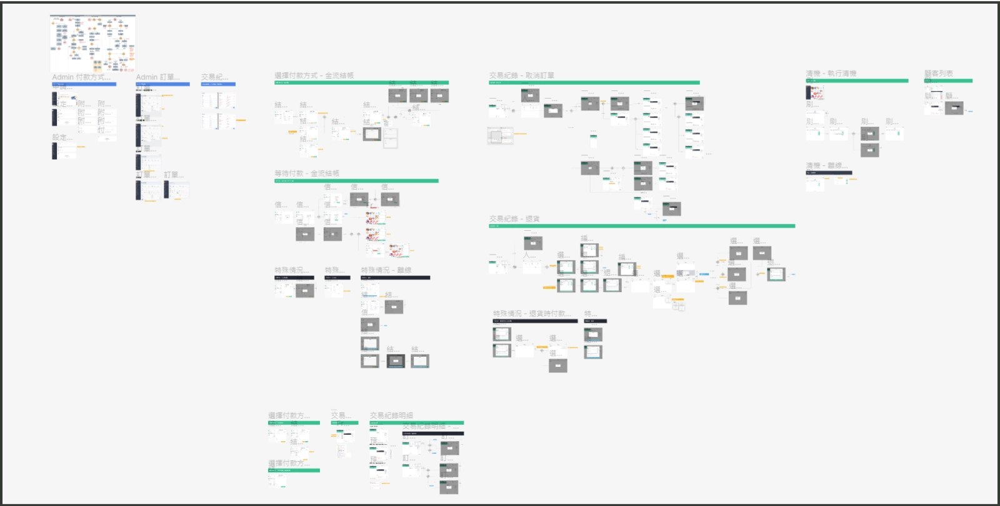